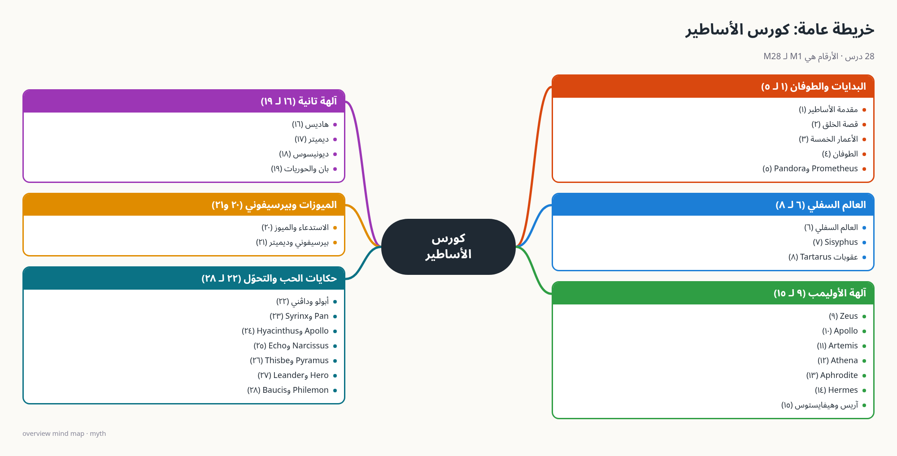

🏛️
كورس الميثولوجيا للشعر الإنجليزي
كل الأساطير اللي الشعراء الإنجليز بيلعبوا بيها — من الصفر، حكاية حكاية.
🧠 شوف الخريطة الذهنية الشاملة للكورس

📚 ملفات PDF إضافية للكورس
📄 الموديولات 1 إلى 8: إنجليزي مبسط (A2-B1)📄 الموديولات 1 إلى 8: إنجليزي + عربي📄 الموديولات 9 إلى 11: إنجليزي مبسط (A2-B1)📄 الموديولات 9 إلى 11: إنجليزي + عربي📄 الموديولان 12 و13: إنجليزي مبسط (A2-B1)📄 الموديولان 12 و13: إنجليزي + عربي📄 الموديولان 14 و15: إنجليزي مبسط (A2-B1)📄 الموديولان 14 و15: إنجليزي + عربي📄 الموديولان 16 و17: إنجليزي مبسط (A2-B1)📄 الموديولان 16 و17: إنجليزي + عربي📄 الموديولان 18 و19: إنجليزي مبسط (A2-B1)📄 الموديولان 18 و19: إنجليزي + عربيتقدمك ·
✨ ماذا تجد في كل درس؟
- 📝 شرح مكتوب مبسّط، خطوة بخطوة.
- 🎧 تسجيل صوتي للدرس، لتسمعه في أي وقت.
- 📄 ملف PDF لكل درس، وكتاب PDF كامل للكورس.
- ✅ اختبار قصير بعد كل درس.
🗺️ خطة الكورس
يبدأ كورس الميثولوجيا من الصفر، حكاية بعد حكاية، في مستويات متدرجة: أساسيات الأسطورة، الأبطال والوحوش، الملاحم الكبرى، ثم مستوى متقدم وامتحان شامل.
يشمل القصص الأساسية: باندورا، وطروادة كاملة، والإنيادة، وأوديب، وياسون وميديا، والأساطير النوردية والآرثرية والتوراتية والمصرية، ونظريات الأسطورة.
يعقب كل درس اختبار قصير، وتأتي مراجعات متباعدة لتثبيت المعلومة.
🏛️
الدرس M1: يعني إيه أسطورة؟ وإزاي الشاعر الإنجليزي بيستخدمها؟📊 A1 · اختبار بعده
🏛️
الدرس M2: خلق الكون — من الفوضى (Chaos) لأوليمبوس📊 A1 · اختبار بعده
🏛️
الدرس M3: أعمار البشر الخمسة (Hesiod)📊 A1 · اختبار بعده
🏛️
الدرس M4: الطوفان الإغريقي — Deucalion وPyrrha📊 A1 · اختبار بعده
🏛️
الدرس M5: باندورا وبروميثيوس — النار المسروقة والجرة الملعونة📊 A1 · اختبار بعده
🏛️
الدرس M6: خريطة العالم السفلي — الأنهار الخمسة وCharon والقضاة📊 A1 · اختبار بعده
🏛️
الدرس M7: Sisyphus — أشهر عقوبة في التاريخ📊 A1 · اختبار بعده
🏛️
الدرس M8: طنطالوس وإكسيون وبنات داناوس📊 A1 · اختبار بعده
🏛️
الدرس M9: زيوس / جوبيتر، ملك الآلهة والشعر📊 A1 · اختبار بعده
🏛️
الدرس M10: أبولو، إله النور والنبوءة والقيثارة📊 A1 · اختبار بعده
🏛️
الدرس M11: أرتميس وديانا — إلهة القمر والصيد 🏹🌙📊 A1 · اختبار بعده
🦉
الدرس M12: أثينا ومينيرفا — الإلهة اللي اتولدت من راس أبوها📊 A1
💘
الدرس M13: أفروديت وفينوس — إلهة الحب والجمال📊 A1
الدرس M14: هيرميس وعطارد: الرسول، واللص، وإله الحدود📊 A1
⚒️
الدرس M15: آريس وهيفايستوس: مارس وفولكان: الحرب والصنعة📊 A1
💀
الدرس M16: هاديس وبلوتو: الإله اللي مش بيتسمى📊 A1
🌾
الدرس M17: ديميتر وسيريس: الأم اللي وقفت الدنيا📊 A1
🍇
الدرس M18: ديونيسوس وباخوس: الإله اللي بيكسر الحدود📊 A1
🐐
الدرس M19: بان والحوريات: الإله اللي مابيسألش عنك📊 A1
🎼
الدرس M20: الاستدعاء: الشاعر بيطلب من الميوز تحكي بدله📊 A1
🌷
الدرس M21: بيرسيفوني وديميتر: البنت اللي اختفت من المرج📊 B1
🌿
الدرس M22: أبولو وداڤني: الحب اللي بيجري📊 B1
الدرس M23: بان وسيرينكس: ناي القصب📊 A1
🌸
الدرس M24: هياكينثوس: الزهرة اللي مكتوب عليها الحزن📊 A1
🪞
الدرس M25: نرسيس وإيكو: الصدى والانعكاس📊 A1
🧱
الدرس M26: بيراموس وثيسبي: الحب من ورا الحيطة📊 A1
🕯️
الدرس M27: هيرو وليندر: السباحة اللي بتنتهي بنور مطفي📊 A1
🏡
الدرس M28: فيليمون وباوكيس: الضيافة اللي بتتكافأ📊 A1
شرح عربي إضافي (خارجي)
لينكات برّه الموقع بتفتح في صفحة جديدة، بشرح بالعربي. مش جزء من الكورس.
🔗 الدرس M5 (بروميثيوس): TED-Ed Prometheus بترجمة عربي🔗 الدرس M25 (نرسيس): سكاي نيوز عربية، نرسيس حين تعشق نفسك حد الموت🔗 الدرس M15 (آريس): يوتيوب، آريس إله الحرب بالعربي🔗 Orpheus وEurydice: TED-Ed بترجمة عربي🔗 بودكاست ورق: حلقة 2، الأساطير الإغريقية🔗 مقال: الميثولوجيا الإغريقية (Orbisica)🔗 دليل: الأساطير الإغريقية والكلاسيكيات (Reading Corner)